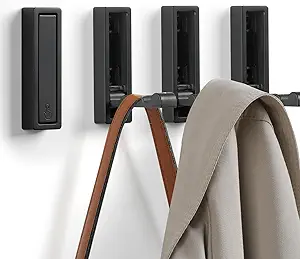

Extend Your Headboard
Make the room feel wider by extending the headboard across the wall. It draws the eye sideways and gives structure to the space, especially helpful in narrow bedrooms.
Trying to make a narrow bedroom work for two people? Whether you're designing for siblings, roommates, or partners, smart compact storage and the right layout can completely transform a small space. In this guide, we’ll show you storage solutions, layout tricks, and furniture ideas to maximize comfort and function—without overcrowding the room.
In a shared narrow bedroom, your bed should do more than just sleep. Use a bed frame with built-in drawers or storage compartments. If you're tight on space, consider a loft or bunk bed to open up floor area. Trundle beds also give you flexibility without sacrificing square footage.

Don’t waste wall height. Add tall shelves, wall-hung cabinets, or over-the-door organizers to keep essentials off the floor. Pegboards and hanging storage systems can also double as decor while saving space.

Fold-down desks, collapsible chairs, and wall-mounted tables are perfect for shared bedrooms. You get functionality when needed—and space back when you don’t. It’s one of the smartest compact storage strategies for small rooms.
Sharing a small closet? Divide it up with fabric bins, labeled drawers, and double hanging rods. This avoids fights and keeps both sides of the room organized. Use vertical shelf dividers to stack efficiently and reduce clutter.

Natural light and wall-mounted lighting can make the room feel bigger. Stick to light colors—whites, soft greys, pale blues—to visually expand tight spaces. Mirrors reflect light and give depth, especially in narrow layouts.
Make the room feel wider by extending the headboard across the wall. It draws the eye sideways and gives structure to the space, especially helpful in narrow bedrooms.

Keep visual clutter down by using small-scale artwork. This approach keeps the space breathable while still adding personality—ideal for tight, shared layouts.
Free up nightstand space with wall sconces instead of lamps. They create cozy lighting zones and make your room feel less crowded.

A low bed opens up vertical space and makes your ceilings feel taller. It’s a sleek choice that keeps your room from feeling boxed in.
When you're designing a shared, narrow bedroom, smart compact storage is the key. From furniture choices to wall layout and lighting, small changes make a big impact. Focus on function, reduce clutter, and let each piece earn its place.
Have a favorite small bedroom trick? Drop it in the comments and share how you've made your compact space work!